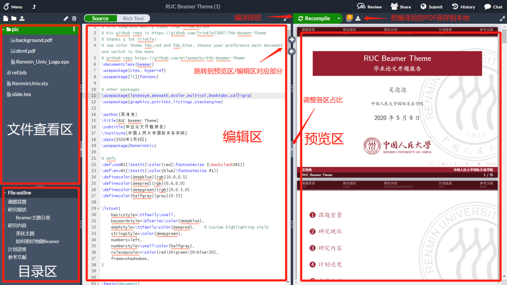
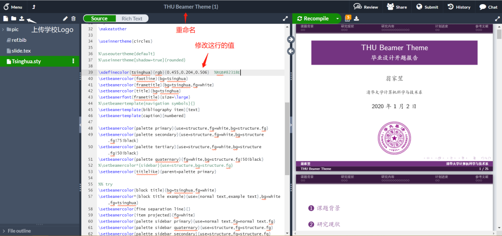
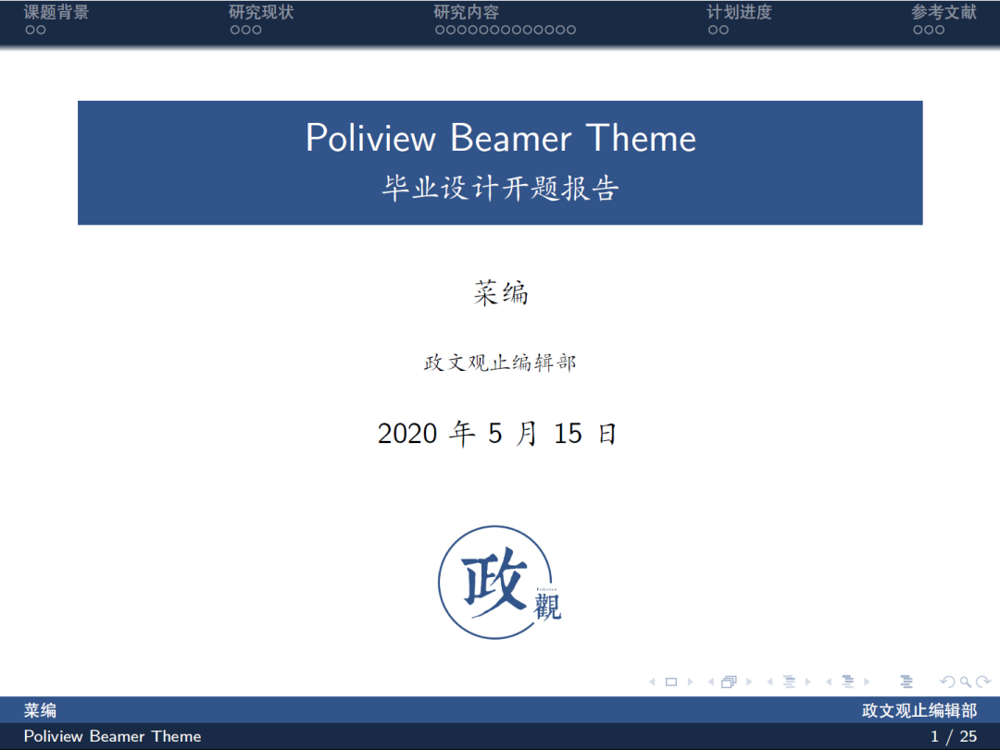

收录于合集 #实用技术 19个
什么是Beamer
地球人都知道，PowerPoint 的特点是 “它既没有 power 也没有 point”。相信（处女座的）读者朋友们在制作PPT时往往会强迫症发病，一定要对齐表格、文字，这十分浪费时间。同时，在报告时又往往发现PPT还是有一些瑕疵。而Beamer是一种基于Latex语法制作幻灯片的方式，其灵活且强大，省去了我们在制作PowerPoint时繁琐的排版等步骤。更为重要的是，由于Beamer使用代码编写，其产生的幻灯片更加精致，在文本、图片对齐等细节上较PowerPoint更为严谨，适合在学术场合使用。并且，一旦熟悉Beamer的语法，其制作过程会比PowerPoint更加快捷方便。
安装及环境配置
有Latex基础的读者看到上文“方便”二字，心里可能会在想，“政观的文章真是把👴逗乐了，👴写Latex从来就没有方便的时候”。其中最不方便的环节就是Latex的配置，以及Latex的中文显示。本地环境的配置使得beamer的学习曲线十分陡峭。这让笔者想到一位德高望重的老电机工程师回忆自己上学时描图的感受：
“我们就有几年是用鸭嘴的笔，旁边有个小盒子，坠（最）痛苦的就是把鸭嘴笔这个水弄到里面，描图的时候一下子就…然后就用刀片去刮，这是描图坠（最）痛苦的。”
最痛苦的不是描图本身，而是描图前配置鸭嘴笔的过程，制作beamer也是如此。因此，小编一直使用在线编辑Latex的Overleaf网站进行beamer的制作，它省去了所有配置环境的环节。本文不会涉及本地的配置环节，所使用的beamer为中国人民大学主题模板（点击阅读原文即可跳转）。点击open as template，注册账号后，即可看到以下界面：

编辑界面主要分为文件查看、目录、编辑、预览四个窗口。常用按钮有编译、调整各窗口、跳转。
制作幻灯片
目录结构
Beamer的工程文件通常beamer代码本体、样式、参考文献、多媒体文件三个部分构成。在本主题中，代码本体文件即slide.tex，样式文件即RenminUniv.sty，参考文献即ref.bib，多媒体文件即照片文件夹/pic。
制作首页
一份beamer幻灯片可以大致分成以下首页，目录，正文，参考文献四个部分。所以，做一份beamer的步骤，也就和把一只大象塞进冰箱里一样：第一步，制作首页；第二步，制作目录；第三步，制作正文；第四步，制作参考文献。
首页的制作首先在14行-18行输入信息：
\author{吴泡泡} # 姓名\title{RUC Beamer Theme} # 主标题\subtitle{毕业论文开题报告} # 副标题\institute{中国人民大学国际关系学院} # 机构\date{2020年5月9日} # 日期
然后在29行-38行生成首页，beamer中每一页幻灯都是由\begin{frame} +代码块+ \end{frame}表示，并且比较复杂的语法也由\begin{} + 代码块 + \end{} 表示。
\begin{frame} \titlepage \begin{figure}[htpb] \begin{center} \includegraphics[width=0.4\linewidth]{pic/Renmin_Univ_Logo.eps} #在底部插入学校的标志，图片位置在左侧文件目录中的pic/Renmin_Univ_Logo.eps \end{center} \end{figure}\end{frame}
**
**
制作目录
一份beamer幻灯片可以大致分成以下首页，目录，正文，参考文献四个部分。所以目录的制作并不需要调整，beamer会自动根据正文的内容生成目录。
\begin{frame} \tableofcontents[sectionstyle=show,subsectionstyle=show/shaded/hide,subsubsectionstyle=show/shaded/hide]\end{frame}
制作正文
每一页幻灯片正文的制作由\begin{frame} +代码块+ \end{frame}表示，如下所示
\section{课题背景}
\begin{frame}{用Beamer很高大上？} \begin{itemize}[<+-| alert@+>] % 当然，除了alert，手动在里面插 \pause 也行 \item 大家都会\LaTeX{}，好多学校都有自己的Beamer主题 \item 中文支持请选择 Xe\LaTeX{} 编译选项 \item Overleaf项目地址位于 \url{https://www.overleaf.com/latex/templates/thu-beamer-theme/vwnqmzndvwyb}，可以直接使用 \item GitHub项目地址位于 \url{https://github.com/Trinkle23897/THU-Beamer-Theme}，如果有bug或者feature request可以去里面提issue \end{itemize}\end{frame}
其中，\begin{frame}前的\section{课题背景}表示新的一节，这会在目录页中得到体现。此外，\subsection{新小节}表示新的一小节。\begin{itemize}
- \item + \end{itemize}表示项目列表，这是beamer中输入文字做最常用的语法，[<+-| alert@+>] 代表编号列表逐行显示。
小编在制作正文时常用的语法有：
# 编号列表。如需二级列表再加入一个\begin{}...\end{}即可，参考223行-229行\begin{enumerate} \item 菜编 \item 鲑鱼编\end{enumerate}
# 底部插入图片，参考339行-343行\begin{figure}[htpb] \begin{center} \includegraphics[width=0.4\linewidth]{pic/pic.png} \end{center}\end{figure}
# 插入编程语言，参考235行-243行\begin{lstlisting}[language=R]print('R is the best programming language.')\end{lstlisting}
#插入超链接\url{}
# 插入表格，参考100行-115行\begin{table}[h] \centering \begin{tabular}{c|c} 民主 & 非民主 \\ \hline 和平 & 战争 \\ \end{tabular}\end{table}
# 分栏。也可使用149行-180行的minipage进行分页\begin{multicols}{2}Column 1\columnbreakColumn 2\end{multicols}
其他一些常用的语法在这个模板中都有体现，读者朋友们可以自行阅读模板代码找一找。
制作参考文献
制作参考文献十分简单，仅需要使用知网CNKI、Google Scholar等网站或者Endnotes等文献管理工具导出bib文件，并粘贴进左侧目录中的ref.bib中即可。
生成PDF文件
点击右侧recompile按钮，稍等片刻即可生成PDF文件。至此，一份beamer幻灯片制作完成。当然，实践中往往需要recompile做预览生成好几次PDF进行微调。
定制自己学校的模板
小编也制作做了吉林大学的Beamer模板(http://www.overleaf.com/latex/templates/jlu-beamer- theme/pbnvqnnbczvh)。本文所使用的模板都是基于所使用的在线模板是由Trinkle23897同学所开发的THU-Beamer- Theme制作而成(https://www.overleaf.com/latex/templates/thu-beamer- theme/vwnqmzndvwyb)，读者朋友们可在Ovealeaf Template搜索现成模板。也可以将Trinkle23897同学的模板调整为自己学校的Logo及配色。下文以政文观止为例进行示范如何定制beamer。

打开THU template后，上传学校logo，并在slide.tex中43行修改图片来源。
\begin{frame} \titlepage \begin{figure}[htpb] \begin{center} \includegraphics[width=0.2\linewidth]{pic/poliview.jpg} \end{center} \end{figure}\end{frame}
点击tsinghua.sty，并修改39行中的配色参数
# 若输入0-255的数值,需要将原来的{rgb}修改为{RGB}\xdefinecolor{tsinghua}{RGB}{49,84,138}
点击recompile，修改完成

撰文：吴温泉 编辑：吴温泉